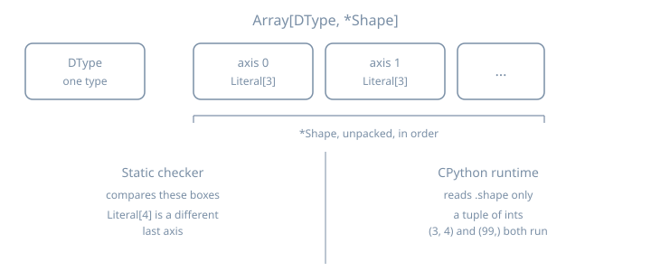

TypeVarTuple Array Shapes
TypeVarTuple Array Shapes
Thesis
A type variable stands for one type. A type variable tuple (TypeVarTuple) stands for a tuple of types. You unpack it with * or with typing.Unpack. PEP 646 added that tool in Python 3.11 so an array can be generic in its dtype and in every axis: Array[DType, *Shape]. PEP 695 (Python 3.12) adds the spelling class Array[DType, *Shape]. The integers in a runtime .shape are a separate object. A type checker compares the type arguments. CPython runs the function either way.
On Python 3.15 the constructor grew four keyword arguments: bound, covariant, contravariant, and infer_variance. What’s New in Python 3.15 says the meaning of bound is still undefined in the typing specification. mypy 2.4.0 and pyright 1.1.414 still reject those keywords. Case 8 runs the constructor and both checkers. Shape checks of the kind in this chapter have been expressible since 3.11.
NumPy 2.5.4 and PyTorch 2.14.1, in the stubs installed here, still describe a shape as one tuple type. NumPy’s ndarray is Generic[_ShapeT_co, _DTypeT_co]. _ShapeT_co is one type variable bound to tuple[int, ...], defaulting to tuple[Any, ...]. numpy.typing.NDArray evaluates to numpy.ndarray[_AnyShape, numpy.dtype[ScalarT]] with _AnyShape equal to tuple[Any, ...], so the public alias keeps a dtype and drops rank. PyTorch’s torch.__version__ is 2.14.1+cu130. In that stub Tensor.shape is Size, and Size subclasses tuple[int, ...]. Those facts come from reading the stubs. This chapter does not type-check either library. The class below is the small PEP 646 array, so the rule is visible on its own.
Every listing ran on CPython 3.15.0. python3.15 --version prints Python 3.15.0. sys.version on this machine is 3.15.0 (main, Oct 9 2026, 15:24:40) [Clang 22.1.3 ]. Checker commands use that same 3.15.0 with mypy 2.4.0 (python3.15 -m mypy --version prints mypy 2.4.0 (compiled: yes)) and pyright 1.1.414. Pyright is python3.15 -m pyright --pythonversion 3.15. It prints the absolute path of the file. These runs lived in /tmp/py-shapes-lab/.
Mental model
Array[DType, *Shape]
| +-- zero or more axis types, always written unpacked
+-- exactly one dtype
type arguments runtime value
Array[float, Literal[3], Literal[3]] .shape is some tuple[int, ...]
Array[float, int] one axis, and that axis's type is int
Array[float, int, int] two axes, each typed int
Array[float, *tuple[int, ...]] any rank, each axis typed intRank here means how many axis types you wrote. It is the length of the type-argument tuple, which a checker can see. It is not len(array.shape) unless you write that test yourself.
Four rules. The listings below are the ones that go wrong in array code:
- Unpack a
TypeVarTuple. TheTypeVarTupledocs requiretuple[*Ts]. A bareTsin that slot is invalid. - One unpacked
TypeVarTupleper parameter list and per type-argument list. A second one is a checker error. CPython still builds the function. *args: *Tsgives each positional argument its own slot inTs.*args: intmeans every argument isint.*tuple[int, ...]andUnpack[tuple[int, ...]]are one type to mypy and pyright.get_argson the two aliases does not return equal objects.

Worked examples
Case 1: A dtype and a tuple of axis types
relu promises the same dtype and the same axis types out as in. The body builds a new Array and copies .shape. Nothing in Array.__init__ consults DType or Shape.
# array_relu.py — dtype plus a variadic shape, at runtime
from typing import get_args
class Array[DType, *Shape]:
def __init__(self, values: list[float], shape: tuple[int, ...]) -> None:
self.values = values
self.shape = shape
def __repr__(self) -> str:
return f"Array(shape={self.shape}, n={len(self.values)})"
def relu[DType, *Shape](x: Array[DType, *Shape]) -> Array[DType, *Shape]:
return Array([v if v > 0.0 else 0.0 for v in x.values], x.shape)
def main() -> None:
image: Array[float, int, int] = Array([1.0, -2.0, 3.0, -4.0], (2, 2))
print(relu(image))
alias = Array[float, int, int]
print("args", get_args(alias))
print("params", tuple(p.__name__ for p in Array.__type_params__))
print("kinds", tuple(type(p).__name__ for p in Array.__type_params__))
if __name__ == "__main__":
main()$ python3.15 array_relu.py
Array(shape=(2, 2), n=4)
args (<class 'float'>, <class 'int'>, <class 'int'>)
params ('DType', 'Shape')
kinds ('TypeVar', 'TypeVarTuple')get_args(Array[float, int, int]) is the dtype and then one entry per axis. The class’s own type parameters are a TypeVar named DType and a TypeVarTuple named Shape. The printed object is the values and the shape tuple. The type arguments showed up only on the alias. relu copied .shape, so the new object still prints (2, 2). That copy is ordinary Python.
Both checkers accept the file.
$ python3.15 -m mypy array_relu.py
Success: no issues found in 1 source file$ python3.15 -m pyright --pythonversion 3.15 array_relu.py
0 errors, 0 warnings, 0 informationsCase 2: A square the checker accepts
Literal[3] is a type with one inhabitant, the integer 3. Two of them are two axis types. square asks for that pair and returns it. relu is shape-preserving, so the checker lets the result flow back out.
# shape_ok.py
from typing import Literal
class Array[DType, *Shape]:
def __init__(self, values: list[float], shape: tuple[int, ...]) -> None:
self.values = values
self.shape = shape
def relu[DType, *Shape](x: Array[DType, *Shape]) -> Array[DType, *Shape]:
return Array([v if v > 0.0 else 0.0 for v in x.values], x.shape)
def square(x: Array[float, Literal[3], Literal[3]]) -> Array[float, Literal[3], Literal[3]]:
return relu(x)
def main() -> None:
kernel: Array[float, Literal[3], Literal[3]] = Array(
[1.0, -1.0, 0.0, 2.0, -2.0, 0.5, 0.0, 0.0, 3.0],
(3, 3),
)
out = square(kernel)
print(out.shape)
if __name__ == "__main__":
main()$ python3.15 shape_ok.py
(3, 3)$ python3.15 -m mypy shape_ok.py
Success: no issues found in 1 source file$ python3.15 -m pyright --pythonversion 3.15 shape_ok.py
0 errors, 0 warnings, 0 informationsCase 3: The same rank, a different last axis
Array[float, Literal[3], Literal[4]] is still rank 2. The last axis type is Literal[4]. square requires Literal[3]. CPython prints the real shape and exits 0. Both checkers reject the call. Pyright adds the reason: Shape on this class is invariant, so *tuple[Literal[3], Literal[4]] is not the same pack as *tuple[Literal[3], Literal[3]].
# shape_wrong.py
from typing import Literal
class Array[DType, *Shape]:
def __init__(self, values: list[float], shape: tuple[int, ...]) -> None:
self.values = values
self.shape = shape
def square(x: Array[float, Literal[3], Literal[3]]) -> None:
print(len(x.values), x.shape)
def main() -> None:
wide: Array[float, Literal[3], Literal[4]] = Array([0.0] * 12, (3, 4))
square(wide)
if __name__ == "__main__":
main()$ python3.15 shape_wrong.py
12 (3, 4)$ python3.15 -m mypy shape_wrong.py
shape_wrong.py:17: error: Argument 1 to "square" has incompatible type "Array[float, Literal[3], Literal[4]]"; expected "Array[float, Literal[3], Literal[3]]" [arg-type]
Found 1 error in 1 file (checked 1 source file)$ python3.15 -m pyright --pythonversion 3.15 shape_wrong.py
/tmp/py-shapes-lab/shape_wrong.py
/tmp/py-shapes-lab/shape_wrong.py:17:12 - error: Argument of type "Array[float, Literal[3], Literal[4]]" cannot be assigned to parameter "x" of type "Array[float, Literal[3], Literal[3]]" in function "square"
"Array[float, Literal[3], Literal[4]]" is not assignable to "Array[float, Literal[3], Literal[3]]"
Type parameter "Shape@Array" is invariant, but "*tuple[Literal[3], Literal[4]]" is not the same as "*tuple[Literal[3], Literal[3]]" (reportArgumentType)
1 error, 0 warnings, 0 informationsCase 4: Rank is the length of the pack
Array[float, int] is one axis. Array[float, int, int] is two. The axis type is int in both, which means “some integer extent”, and it says nothing about the number 3 stored in .shape.
# rank_wrong.py
class Array[DType, *Shape]:
def __init__(self, values: list[float], shape: tuple[int, ...]) -> None:
self.values = values
self.shape = shape
def need_matrix(x: Array[float, int, int]) -> None:
print(x.shape)
def main() -> None:
vector: Array[float, int] = Array([1.0, 2.0, 3.0], (3,))
need_matrix(vector)
if __name__ == "__main__":
main()$ python3.15 rank_wrong.py
(3,)$ python3.15 -m mypy rank_wrong.py
rank_wrong.py:14: error: Argument 1 to "need_matrix" has incompatible type "Array[float, int]"; expected "Array[float, int, int]" [arg-type]
Found 1 error in 1 file (checked 1 source file)$ python3.15 -m pyright --pythonversion 3.15 rank_wrong.py
/tmp/py-shapes-lab/rank_wrong.py
/tmp/py-shapes-lab/rank_wrong.py:14:17 - error: Argument of type "Array[float, int]" cannot be assigned to parameter "x" of type "Array[float, int, int]" in function "need_matrix"
"Array[float, int]" is not assignable to "Array[float, int, int]"
Type parameter "Shape@Array" is invariant, but "*tuple[int]" is not the same as "*tuple[int, int]" (reportArgumentType)
1 error, 0 warnings, 0 informationsPyright’s detail line is the whole rule in one place: *tuple[int] is not *tuple[int, int].
Case 5: Concatenate an axis, or move one to the end
Concatenating shapes, in this type system, means building a new type-argument list. prepend_axis puts a fresh int in front of *Shape. move_first_axis_to_last is the standard library’s tuple trick from the TypeVarTuple docs, applied to axes: peel off Axis0, keep *Rest, and write *Rest then Axis0.
The bodies do the same thing to the integer tuple. That agreement is the author’s. The checker is looking at the annotations.
# concat_ok.py
from typing import Literal
class Array[DType, *Shape]:
def __init__(self, values: list[float], shape: tuple[int, ...]) -> None:
self.values = values
self.shape = shape
def __repr__(self) -> str:
return f"Array(shape={self.shape})"
def prepend_axis[DType, *Shape](x: Array[DType, *Shape]) -> Array[DType, int, *Shape]:
return Array(x.values, (1, *x.shape))
def move_first_axis_to_last[DType, Axis0, *Rest](
x: Array[DType, Axis0, *Rest],
) -> Array[DType, *Rest, Axis0]:
return Array(x.values, (*x.shape[1:], x.shape[0]))
def main() -> None:
image: Array[float, Literal[2], Literal[3]] = Array([0.0] * 6, (2, 3))
batched: Array[float, int, Literal[2], Literal[3]] = prepend_axis(image)
moved: Array[float, Literal[3], Literal[2]] = move_first_axis_to_last(image)
print(batched)
print(moved)
if __name__ == "__main__":
main()$ python3.15 concat_ok.py
Array(shape=(1, 2, 3))
Array(shape=(3, 2))$ python3.15 -m mypy concat_ok.py
Success: no issues found in 1 source file$ python3.15 -m pyright --pythonversion 3.15 concat_ok.py
0 errors, 0 warnings, 0 informations(2, 3) becomes (1, 2, 3) because the function prepended the integer 1, and it becomes (3, 2) because the function rotated the tuple. The annotations say the result types are Array[float, int, Literal[2], Literal[3]] and Array[float, Literal[3], Literal[2]]. Both checkers accept those two assignments.
Claiming the rotated value still has axes (Literal[2], Literal[3]) is a type error. The program still prints (3, 2).
# concat_wrong.py
from typing import Literal
class Array[DType, *Shape]:
def __init__(self, values: list[float], shape: tuple[int, ...]) -> None:
self.values = values
self.shape = shape
def move_first_axis_to_last[DType, Axis0, *Rest](
x: Array[DType, Axis0, *Rest],
) -> Array[DType, *Rest, Axis0]:
return Array(x.values, (*x.shape[1:], x.shape[0]))
def main() -> None:
image: Array[float, Literal[2], Literal[3]] = Array([0.0] * 6, (2, 3))
moved = move_first_axis_to_last(image)
same: Array[float, Literal[2], Literal[3]] = moved
print(same.shape)
if __name__ == "__main__":
main()$ python3.15 concat_wrong.py
(3, 2)$ python3.15 -m mypy concat_wrong.py
concat_wrong.py:20: error: Incompatible types in assignment (expression has type "Array[float, Literal[3], Literal[2]]", variable has type "Array[float, Literal[2], Literal[3]]") [assignment]
Found 1 error in 1 file (checked 1 source file)$ python3.15 -m pyright --pythonversion 3.15 concat_wrong.py
/tmp/py-shapes-lab/concat_wrong.py
/tmp/py-shapes-lab/concat_wrong.py:20:50 - error: Type "Array[float, Literal[3], Literal[2]]" is not assignable to declared type "Array[float, Literal[2], Literal[3]]"
"Array[float, Literal[3], Literal[2]]" is not assignable to "Array[float, Literal[2], Literal[3]]"
Type parameter "Shape@Array" is invariant, but "*tuple[Literal[3], Literal[2]]" is not the same as "*tuple[Literal[2], Literal[3]]" (reportAssignmentType)
1 error, 0 warnings, 0 informationsInside the generic function the two packs stay different even when a later call would fill both with int. Returning the input unchanged is rejected, and the call still runs:
# rotate_erased.py — identical axis types hide a missing rotation
class Array[DType, *Shape]:
def __init__(self, values: list[float], shape: tuple[int, ...]) -> None:
self.values = values
self.shape = shape
def move_first_axis_to_last[DType, Axis0, *Rest](
x: Array[DType, Axis0, *Rest],
) -> Array[DType, *Rest, Axis0]:
return x
def main() -> None:
image: Array[float, int, int] = Array([1.0, 2.0, 3.0, 4.0], (2, 2))
out: Array[float, int, int] = move_first_axis_to_last(image)
print(out.shape)
if __name__ == "__main__":
main()$ python3.15 rotate_erased.py
(2, 2)$ python3.15 -m mypy rotate_erased.py
rotate_erased.py:11: error: Incompatible return value type (got "Array[DType, Axis0, *Rest]", expected "Array[DType, *Rest, Axis0]") [return-value]
Found 1 error in 1 file (checked 1 source file)$ python3.15 -m pyright --pythonversion 3.15 rotate_erased.py
/tmp/py-shapes-lab/rotate_erased.py
/tmp/py-shapes-lab/rotate_erased.py:11:12 - error: Type "Array[DType@move_first_axis_to_last, Axis0@move_first_axis_to_last, *Rest@move_first_axis_to_last]" is not assignable to return type "Array[DType@move_first_axis_to_last, *Rest@move_first_axis_to_last, Axis0@move_first_axis_to_last]"
"Array[DType@move_first_axis_to_last, Axis0@move_first_axis_to_last, *Rest@move_first_axis_to_last]" is not assignable to "Array[DType@move_first_axis_to_last, *Rest@move_first_axis_to_last, Axis0@move_first_axis_to_last]"
Type parameter "Shape@Array" is invariant, but "*tuple[Axis0@move_first_axis_to_last, *Rest@move_first_axis_to_last]" is not the same as "*tuple[*Rest@move_first_axis_to_last, Axis0@move_first_axis_to_last]" (reportReturnType)
1 error, 0 warnings, 0 informationsmypy reports Array[DType, Axis0, *Rest] against Array[DType, *Rest, Axis0]. The function has to be valid for every instantiation, including Literal[2] then Literal[3], so the checker does not wait for a call site where both axes happen to be plain int.
You cannot type “concatenate two unknown shapes” with two type-variable tuples. That attempt is in the trap.
Case 6: Unpack[tuple[int, ...]] is any number of int axes
*tuple[int, ...] unpacks an open homogeneous tuple into the axis list. Unpack[tuple[int, ...]] is the spelling you need when the star is not available in that position, and it is the form older code wrote everywhere. On 3.15 both spellings are legal. get_args shows they are stored differently, and the alias objects compare unequal. A rank-2 Array[float, int, int] is still a legal argument to a parameter typed with the Unpack form, which is why both checkers accept this file.
# unpack_axes.py — star form and Unpack form of an open axis tuple
from typing import Unpack, get_args
class Array[DType, *Shape]:
def __init__(self, values: list[float], shape: tuple[int, ...]) -> None:
self.values = values
self.shape = shape
def sum_values(x: Array[float, Unpack[tuple[int, ...]]]) -> float:
return sum(x.values)
def main() -> None:
star = Array[float, *tuple[int, ...]]
unpacked = Array[float, Unpack[tuple[int, ...]]]
print("star", get_args(star))
print("unpack", get_args(unpacked))
print("equal", star == unpacked)
matrix: Array[float, int, int] = Array([1.0, 2.0, 3.0, 4.0], (2, 2))
print("sum", sum_values(matrix))
if __name__ == "__main__":
main()$ python3.15 unpack_axes.py
star (<class 'float'>, *tuple[int, ...])
unpack (<class 'float'>, typing.Unpack[tuple[int, ...]])
equal False
sum 10.0$ python3.15 -m mypy unpack_axes.py
Success: no issues found in 1 source file$ python3.15 -m pyright --pythonversion 3.15 unpack_axes.py
0 errors, 0 warnings, 0 informationsAn axis typed str is outside tuple[int, ...]. The sum still runs. mypy and pyright both print the expected type as Array[float, *tuple[int, ...]] even though the source wrote Unpack[...]. That is the checkers treating the two spellings as one type.
# unpack_wrong.py — a str axis is not an int axis
from typing import Unpack
class Array[DType, *Shape]:
def __init__(self, values: list[float], shape: tuple[int, ...]) -> None:
self.values = values
self.shape = shape
def sum_values(x: Array[float, Unpack[tuple[int, ...]]]) -> float:
return sum(x.values)
def main() -> None:
named: Array[float, str] = Array([1.0], (1,))
print(sum_values(named))
if __name__ == "__main__":
main()$ python3.15 unpack_wrong.py
1.0$ python3.15 -m mypy unpack_wrong.py
unpack_wrong.py:17: error: Argument 1 to "sum_values" has incompatible type "Array[float, str]"; expected "Array[float, *tuple[int, ...]]" [arg-type]
Found 1 error in 1 file (checked 1 source file)$ python3.15 -m pyright --pythonversion 3.15 unpack_wrong.py
/tmp/py-shapes-lab/unpack_wrong.py
/tmp/py-shapes-lab/unpack_wrong.py:17:22 - error: Argument of type "Array[float, str]" cannot be assigned to parameter "x" of type "Array[float, *tuple[int, ...]]" in function "sum_values"
"Array[float, str]" is not assignable to "Array[float, *tuple[int, ...]]"
Type parameter "Shape@Array" is invariant, but "*tuple[str]" is not the same as "*tuple[int, ...]" (reportArgumentType)
1 error, 0 warnings, 0 informationsUnpack is also how PEP 692 types **kwargs from a TypedDict. Same name, different job. An unpacked TypeVarTuple describes positional slots. Unpack[SomeTypedDict] describes keyword names. They meet only if you import Unpack and then use it for both.
Case 7: *args: *Ts
*args: *Ts is not “a tuple of Ts”. Each argument is one element of Ts, and the annotation is stored as Unpack[Ts]. Here Ts is tied to the callback’s positional parameters, the same idea as the call_soon example in the TypeVarTuple docs.
# args_ok.py — *args: *Ts matches the callback argument by argument
from collections.abc import Callable
from typing import get_type_hints
def apply_axes[*Ts](callback: Callable[[*Ts], str], *args: *Ts) -> str:
return callback(*args)
def label(height: int, width: int) -> str:
return f"{height}x{width}"
def main() -> None:
print(get_type_hints(apply_axes))
print(apply_axes(label, 2, 3))
if __name__ == "__main__":
main()$ python3.15 args_ok.py
{'callback': collections.abc.Callable[[typing.Unpack[Ts]], str], 'args': typing.Unpack[Ts], 'return': <class 'str'>}
2x3$ python3.15 -m mypy args_ok.py
Success: no issues found in 1 source file$ python3.15 -m pyright --pythonversion 3.15 args_ok.py
0 errors, 0 warnings, 0 informationslabel formats whatever it is given, so a string width runs. The checkers both reject the call, and they point at different arguments. mypy solves Ts from the call as (int, str) and then says the callback is the wrong Callable. pyright solves Ts from label as (int, int) and then says the argument pack is wrong, down to Literal['3'] versus int. Same mistake, two reports. Trust the shared conclusion, and read the note under the error before you “fix” the wrong parameter.
# args_wrong.py — a str in *args does not match label's int
from collections.abc import Callable
def apply_axes[*Ts](callback: Callable[[*Ts], str], *args: *Ts) -> str:
return callback(*args)
def label(height: int, width: int) -> str:
return f"{height}x{width}"
def main() -> None:
print(apply_axes(label, 2, "3"))
if __name__ == "__main__":
main()$ python3.15 args_wrong.py
2x3$ python3.15 -m mypy args_wrong.py
args_wrong.py:14: error: Argument 1 to "apply_axes" has incompatible type "Callable[[int, int], str]"; expected "Callable[[int, str], str]" [arg-type]
Found 1 error in 1 file (checked 1 source file)$ python3.15 -m pyright --pythonversion 3.15 args_wrong.py
/tmp/py-shapes-lab/args_wrong.py
/tmp/py-shapes-lab/args_wrong.py:14:11 - error: Argument of type "tuple[Literal[2], Literal['3']]" cannot be assigned to parameter "args" of type "Ts@apply_axes" in function "apply_axes"
Type "*tuple[Literal[2], Literal['3']]" is not assignable to type "*tuple[int, int]"
"*tuple[Literal[2], Literal['3']]" is not assignable to "*tuple[int, int]"
Tuple entry 2 is incorrect type
"Literal['3']" is not assignable to "int" (reportArgumentType)
1 error, 0 warnings, 0 informationsCase 8: The 3.15 constructor, and today’s checkers
This is the 3.15-only piece. The attributes exist at runtime. Setting both covariant=True and contravariant=True raises ValueError, with the message Bivariant types are not supported. The bound=int object is created, and __bound__ is int. That does not mean a checker will reject an axis that is not int. The specification has not defined what bound means on a TypeVarTuple.
# tvt_kwargs.py
from typing import TypeVarTuple
Shape = TypeVarTuple("Shape", covariant=True)
print(
"covariant",
Shape.__covariant__,
"contravariant",
Shape.__contravariant__,
"infer",
Shape.__infer_variance__,
"bound",
Shape.__bound__,
)
Bounded = TypeVarTuple("Bounded", bound=int)
print("bounded", Bounded.__bound__)
try:
TypeVarTuple("Both", covariant=True, contravariant=True)
except ValueError as exc:
print(type(exc).__name__ + ":", exc)$ python3.15 tvt_kwargs.py
covariant True contravariant False infer False bound None
bounded <class 'int'>
ValueError: Bivariant types are not supported.$ python3.15 -m mypy tvt_kwargs.py
tvt_kwargs.py:4: error: Unexpected keyword argument "covariant" for "TypeVarTuple" [misc]
tvt_kwargs.py:7: error: "object" has no attribute "__covariant__" [attr-defined]
tvt_kwargs.py:9: error: "object" has no attribute "__contravariant__" [attr-defined]
tvt_kwargs.py:11: error: "object" has no attribute "__infer_variance__" [attr-defined]
tvt_kwargs.py:13: error: "object" has no attribute "__bound__" [attr-defined]
tvt_kwargs.py:16: error: Unexpected keyword argument "bound" for "TypeVarTuple" [misc]
tvt_kwargs.py:17: error: "object" has no attribute "__bound__" [attr-defined]
Found 7 errors in 1 file (checked 1 source file)$ python3.15 -m pyright --pythonversion 3.15 tvt_kwargs.py
/tmp/py-shapes-lab/tvt_kwargs.py
/tmp/py-shapes-lab/tvt_kwargs.py:4:31 - error: "covariant" is unknown parameter to TypeVarTuple (reportGeneralTypeIssues)
/tmp/py-shapes-lab/tvt_kwargs.py:16:35 - error: "bound" is unknown parameter to TypeVarTuple (reportGeneralTypeIssues)
/tmp/py-shapes-lab/tvt_kwargs.py:20:26 - error: "covariant" is unknown parameter to TypeVarTuple (reportGeneralTypeIssues)
/tmp/py-shapes-lab/tvt_kwargs.py:20:42 - error: "contravariant" is unknown parameter to TypeVarTuple (reportGeneralTypeIssues)
4 errors, 0 warnings, 0 informationsmypy 2.4.0 calls covariant and bound unexpected keywords, then treats the result as object, so the attribute reads fail too. pyright 1.1.414 says each keyword is an unknown parameter of TypeVarTuple. The keywords exist on CPython 3.15. These two checkers do not accept them yet, and bound still has no meaning in the typing specification. Keep them off array signatures.
The trap
The trap is believing the annotation inspects the tuple you passed to __init__.
Array.__init__ is typed as values: list[float] and shape: tuple[int, ...]. Those parameters are not *Shape. Writing Array[float, Literal[3], Literal[3]] on the variable is a claim about the variable. Both checkers accept the claim. The value’s .shape is (99,), and square accepts it.
# lie_ok.py
from typing import Literal
class Array[DType, *Shape]:
def __init__(self, values: list[float], shape: tuple[int, ...]) -> None:
self.values = values
self.shape = shape
def square(x: Array[float, Literal[3], Literal[3]]) -> Array[float, Literal[3], Literal[3]]:
return x
def main() -> None:
lie: Array[float, Literal[3], Literal[3]] = Array([1.0], (99,))
print(square(lie).shape)
if __name__ == "__main__":
main()$ python3.15 lie_ok.py
(99,)$ python3.15 -m mypy lie_ok.py
Success: no issues found in 1 source file$ python3.15 -m pyright --pythonversion 3.15 lie_ok.py
0 errors, 0 warnings, 0 informationsLiteral[3] checked out in Case 3 because two variables disagreed. Here one variable is annotated with a precise type and then filled with a constructor the checker cannot connect to those literals. A shape bug of this kind needs a runtime test: if self.shape != expected: raise ..., or a checker plugin that understands your constructor. PEP 646 does not add that test.
The second trap is two type-variable tuples, which is the obvious way to write “concatenate an unknown prefix with an unknown suffix”. The syntax is legal. The call returns (1, 2, 'a'). The type parameters really are (Left, Right).
# two_tuples.py
def concat[*Left, *Right](left: tuple[*Left], right: tuple[*Right]) -> tuple[*Left, *Right]:
return (*left, *right)
def main() -> None:
print(concat((1, 2), ("a",)))
print("defined", concat.__type_params__)
if __name__ == "__main__":
main()$ python3.15 two_tuples.py
(1, 2, 'a')
defined (Left, Right)$ python3.15 -m mypy two_tuples.py
two_tuples.py:2: error: More than one variadic Unpack in a type is not allowed [misc]
two_tuples.py:3: error: Incompatible return value type (got "tuple[object, ...]", expected "tuple[*Left]") [return-value]
Found 2 errors in 1 file (checked 1 source file)$ python3.15 -m pyright --pythonversion 3.15 two_tuples.py
/tmp/py-shapes-lab/two_tuples.py
/tmp/py-shapes-lab/two_tuples.py:2:86 - error: Type argument list can have at most one unpacked TypeVarTuple or tuple (reportInvalidTypeForm)
1 error, 0 warnings, 0 informationsmypy reports two errors. The first is the rule: more than one variadic unpack in a type. The second says the return is tuple[object, ...], the type mypy uses once that two-unpack return is rejected. pyright reports the rule once, on the return annotation: a type-argument list can have at most one unpacked TypeVarTuple or tuple. To prepend or append a known axis, use an ordinary type variable beside the single TypeVarTuple, as prepend_axis and move_first_axis_to_last do.
The boring rule
- One dtype type variable, then one unpacked shape:
class Array[DType, *Shape]. - Preserve a shape by repeating
*Shapein the parameter and the return. - Add an axis by concatenating a normal type:
Array[DType, int, *Shape]orArray[DType, *Shape, Axis]. - Unknown rank, every axis an
int:Array[DType, *tuple[int, ...]].Unpack[tuple[int, ...]]is the same type to the checkers used here. *args: *Tswhen each argument has its own type.*args: intwhen they all share one.- At most one unpacked
TypeVarTuplein a list. CPython will not stop you. mypy and pyright will. Literalsizes are compared only when they appear as type arguments on names the checker can see. The constructor in this chapter does not put.shapeinto those arguments.- On 3.15, do not pass
bound=toTypeVarTupleand expect either a specified meaning or a clean run under mypy 2.4.0 or pyright 1.1.414. - If the numbers must hold at run time, test
.shapein ordinary Python.
Try this
- In
shape_wrong.py, change the wide array toArray[float, Literal[3], Literal[3]]and pass a values list of length 9 with shape(3, 3). Confirm mypy and pyright both go quiet, then change only the annotation’s last axis back toLiteral[4]and watch the error return whilepython3.15still prints. - In
concat_ok.py, addflat: Array[float, Literal[2], Literal[3]] = prepend_axis(image)and read the error. Say which axis was concatenated, and where. - In
unpack_wrong.py, replacestrwithintand confirm the checkers accept it. Then tryArray[float, int, str]and see whether*tuple[int, ...]rejects a pack that is only partlyint. - In
two_tuples.py, delete*Right. Type the second parameter astuple[str, ...]and the return astuple[*Left, *tuple[str, ...]]. Run mypy and pyright. An unpackedTypeVarTuplealready counts as an open-ended tuple, and the typing spec rejects two open-ended unpacks in onetuple[...]. Record the message you get. If your checker accepts it, say so: that is a checker gap, and the spec is the rule. - Copy
lie_ok.py. At the start ofsquare, addif x.shape != (3, 3): raise ValueError(x.shape). Runpython3.15 lie_ok.py, then mypy. Compare the exception with mypy’s report.
Sources
- PEP 646, Variadic Generics (Python 3.11): https://peps.python.org/pep-0646/
- PEP 695, Type Parameter Syntax (the
class Array[DType, *Shape]spelling, Python 3.12): https://peps.python.org/pep-0695/ - Python 3.15,
typing.TypeVarTuple, including the 3.15 constructor parameters and the note thatboundsemantics are not decided: https://docs.python.org/3.15/library/typing.html#typing.TypeVarTuple - Python 3.15,
typing.Unpack(type-variable tuples, tuple unpacking, and**kwargsTypedDicts): https://docs.python.org/3.15/library/typing.html#typing.Unpack - What’s New in Python 3.15, typing section (
TypeVarTuplegainsbound,covariant,contravariant,infer_variance;boundsemantics remain undefined): https://docs.python.org/3.15/whatsnew/3.15.html - Typing specification, unpacked tuple forms (one open-ended unpack per tuple; a
TypeVarTuplecounts as open-ended): https://typing.python.org/en/latest/spec/tuples.html - NumPy 2.5.4 stubs read locally:
numpy/__init__.pyi(_ShapeT_co,class ndarray) andnumpy/_typing/_shape.py(_Shape,_AnyShape).numpy.typing.NDArray.__value__printednumpy.ndarray[_AnyShape, numpy.dtype[ScalarT]]. - PyTorch 2.14.1 stub read locally:
torch/_C/__init__.pyi(class Size(tuple[_int, ...]),TensorBase.shape: Size).